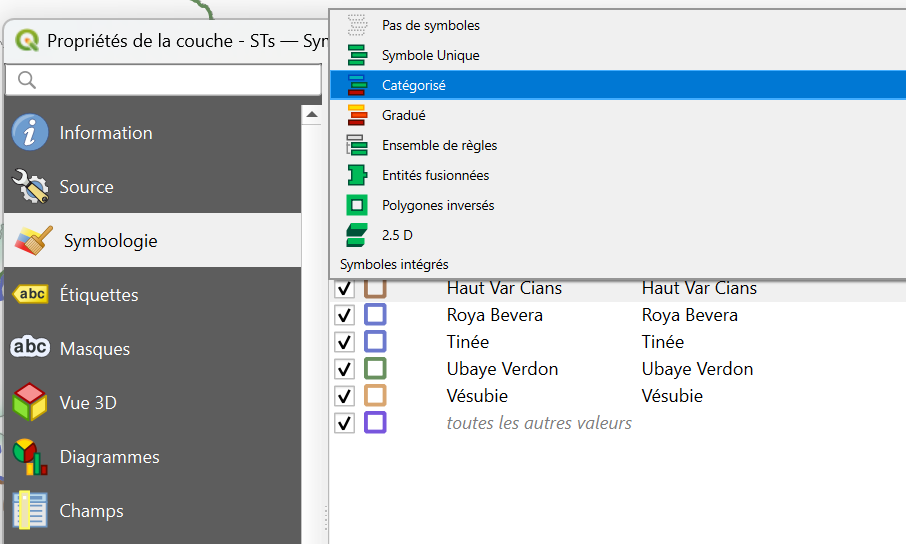
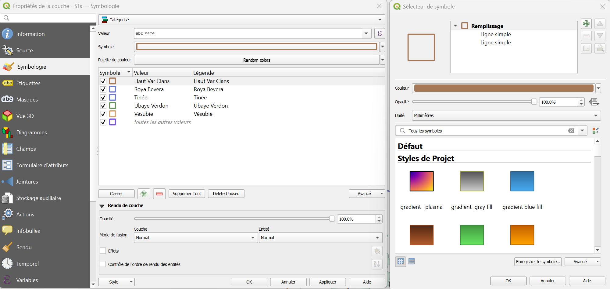
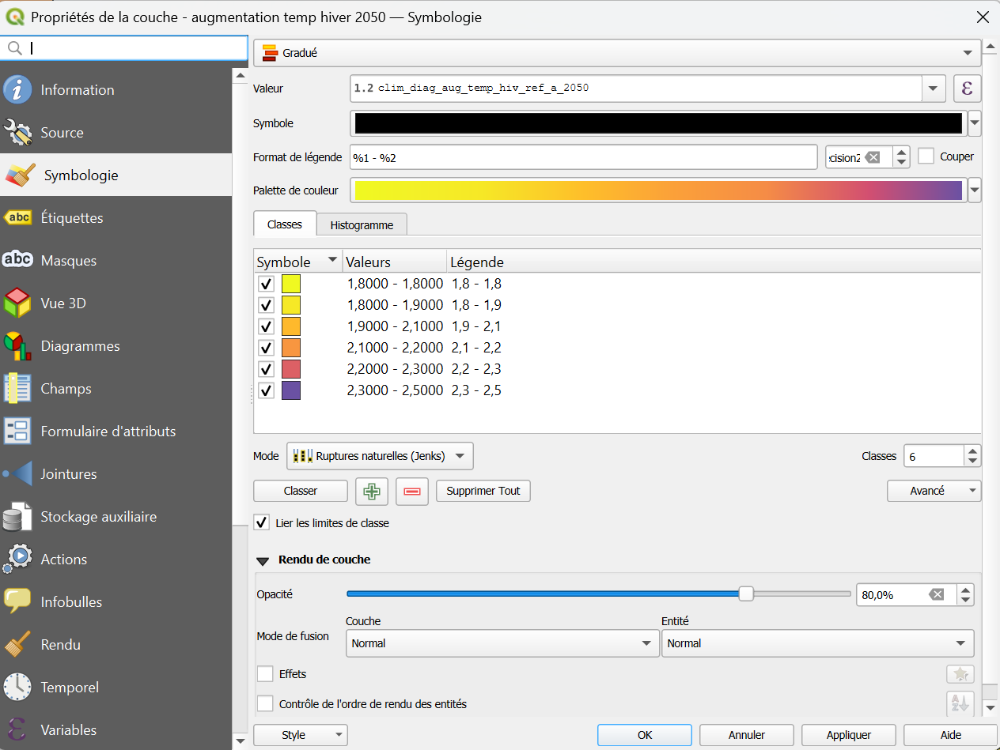
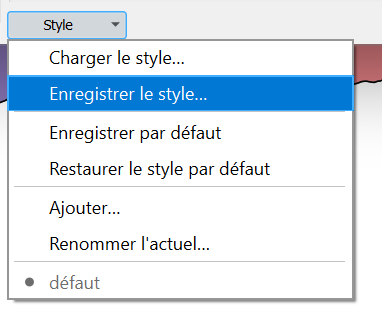
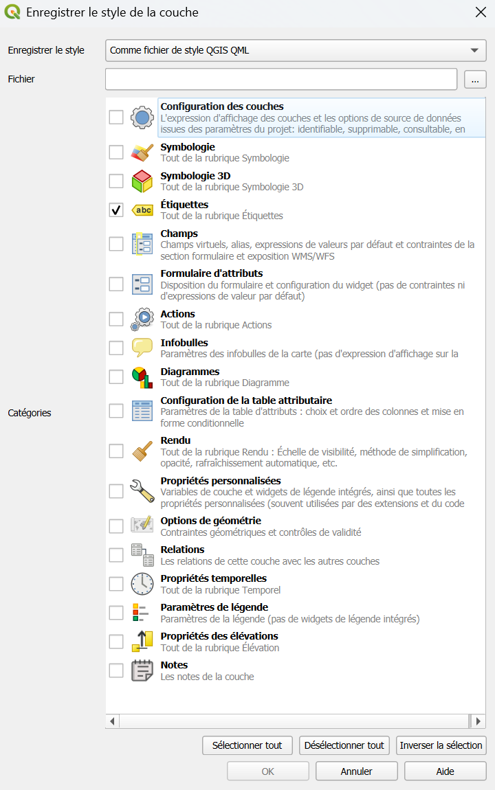
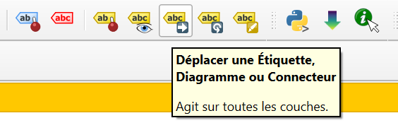
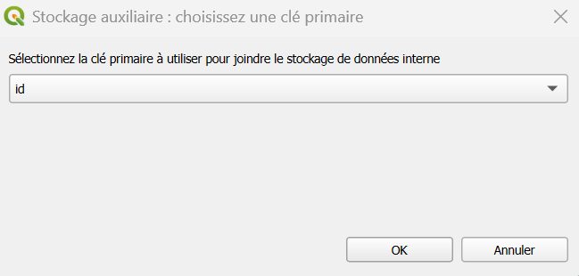

Symbologie et étiquettes
Le mode de représentation des données d'une couche s'appelle la symbologie. Par exemple : des aplats de couleur, des cercles noirs pour des points, des lignes vertes...
Les étiquettes complètent la symbologie : ce sont les textes affichés sur la carte, tirés de la table attributaire (un nom, un nombre...).
Où trouver la symbologie ?
Elle se modifie couche par couche : clic droit sur la couche > Propriétés > Symbologie.
Le panneau « Styles de couche »
Pour tester plus vite, ouvrez le panneau Styles de couche avec F7. Il reste à côté de la carte : chaque réglage se voit immédiatement, sans fenêtre à fermer.
Modes de représentation
Les outils de symbologie de QGIS sont très puissants et permettent de représenter les informations d'une couche de façon synthétique. Voici les modes les plus courants :
| Mode | Ce qu'il fait | Type d'attributs | Cas d'emploi |
|---|---|---|---|
| Symbole unique | Applique un même symbole à toutes les entités, sans tenir compte de leurs attributs. C'est le mode par défaut. | Sans importance pour l'affichage | Tous les points de relevé en rond noir |
| Catégorisé | Représente des différences qualitatives : un attribut permet de distinguer les entités. | Un texte ou un code qui distingue des groupes | Pour des polygones d'occupation des sols : forêt, culture, bâti... |
| Gradué | Représente des différences quantitatives entre les entités. | Un nombre qui varie | Pour des points représentant des villes : une taille variant selon la population |
| Ensemble de règles | Applique des symboles selon des conditions que vous écrivez (même syntaxe que les filtres) | Une condition qui ne tient pas compte d'un seul champ | Les observations de 2025 en rouge, les autres en gris |

Catégoriser et graduer en pratique
Catégorisé : un symbole par valeur
- Dans l'onglet Symbologie, choisissez Catégorisé.
- Dans Valeur, sélectionnez le champ qui distingue les entités (par exemple
nom_commune). - Cliquez sur Classer : QGIS crée une catégorie par valeur trouvée.
- Choisissez les symboles à appliquer à chaque catégorie : double cliquer sur le symbole > la fenêtre Sélecteur de symbole s'ouvre (à droite sur la capture ci-dessous)
- Appliquer pour visualiser les modifications, OK pour sortir de la fenêtre.

Retirer une catégorie
Sélectionnez une ligne puis cliquez sur - pour la retirer.
La ligne toutes les autres valeurs (vide) couvre ce qui n'est pas listé.
Gradué : des classes de valeurs
- Choisissez Gradué.
- Dans Valeur, sélectionnez le champ numérique (par exemple
densite). - Choisissez une rampe de couleurs, le nombre de classes (3 à 5 est lisible) et le mode de découpage, puis Classer.
- Appliquer.

| Mode de découpage | Il fait... | Utile pour... |
|---|---|---|
| Intervalles égaux | Classes de même largeur | Des valeurs réparties régulièrement |
| Quantile | Autant d'entités dans chaque classe | Comparer des rangs, éviter les classes vides |
| Ruptures naturelles | Regroupe les valeurs proches | Une première lecture des données (Jenks) |
Pourquoi ne pas utiliser 15 classes ?
Au-delà de 5 ou 6 classes, l'œil ne distingue plus les nuances. Mieux vaut peu de classes bien contrastées.
Quelques réglages utiles
| Je veux... | Où | Comment |
|---|---|---|
| Changer la couleur ou la taille | Symbologie, clic sur le symbole | Couleur de remplissage, contour, taille |
| Rendre une couche semi-transparente | Onglet Transparence, ou l'opacité du symbole | Une valeur autour de 50 % laisse voir le fond |
| Superposer plusieurs couches | Panneau Couches | Faites glisser : points > lignes > polygones |
| Un contour seul (sans remplissage) | Symbologie > le symbole | Type Contour simple, ou remplissage transparent |
| Copier une symbologie d'une couche à une autre | clic droit > Styles > Copier le style puis Coller le style | Garder une mise en forme cohérente |
| Réutiliser un style dans un autre projet | Propriétés > Style > Enregistrer le style... | Un fichier .qml qu'on charge ailleurs |
Enregistrer et réutilliser un style

L'enregistrement d'un style crée un petit fichier .qml qui stocke la configuration de style renseignée (item sélectionnés ci-dessous).
Ce fichier .qml peut ensuite être utilisé sur une autre couche pour appliquer les mêmes paramètres de style au lieu de tout régler à la main.
Accès depuis les propriétés de la couche, en bas à gauche : Charger/Enregistrer le style

Les étiquettes
Les étiquettes affichent un texte sur chaque entité.
Elles se règlent dans Propriétés > Étiquettes de la couche.
Afficher des étiquettes
- Dans l'onglet Étiquettes, choisissez Étiquettes simples (en haut de la liste).
- Dans Valeur, sélectionnez le champ à afficher (par exemple
nom_secteur). - Réglez le texte : police, taille, couleur depuis l'onglet Texte.
- D'autres paramètres permettent de faciliter la lecture de l'étiquette rendre les étiquettes lisibles.
- Cliquez sur Appliquer.
| Mode | Il fait... |
|---|---|
| Pas d'étiquettes | Rien |
| Étiquettes simples | Le même réglage pour toutes les entités |
| Basées sur des règles | Des réglages différents selon des conditions |
Rendre les étiquettes lisibles
| Réglage | À quoi ça sert | Valeur conseillée |
|---|---|---|
| Tampon (halo) | Détache le texte du fond | Contour blanc de 1 mm : très lisible sur une photo ou un fond coloré |
| Placement | Où se place le texte autour de l'entité | Au-dessus d'un point ; sur la ligne ou le long d'elle ; à l'intérieur d'un polygone |
| Rendu > Visibilité selon l'échelle | Éviter une carte surchargée | Afficher les étiquettes seulement à partir d'une certaine échelle |
| Étiquettes dupliquées | Éviter le même nom répété | Autoriser ou non |
Afficher un nombre, ou plusieurs champs
Dans Valeur, cliquez sur le bouton ε pour écrire une expression. Par exemple, pour afficher le nom et l'effectif :
La syntaxe est celle des filtres et de la calculatrice de champs.Positionner une étiquette à la main
Quand une étiquette gêne, activez l'outil Déplacer une étiquette dans la barre d'outils Étiquettes.

Sélectionner un champ dont la valeur est unique pour chaque entité lorsque la fenêtre "stockage auxilaire" s'ouvre :

L'emplacement est enregistré dans une colonne auxiliaire de la couche.
Documentation complète sur la symbologie et etiquettes
La documentation de QGIS est très complète, n'hésitez pas à la parcourir pour explorer les possibilités : Symbologie & Etiquettes.
Maintenez Ctrl au moment de cliquer sur le lien pour l'ouvrir dans un nouvel onglet